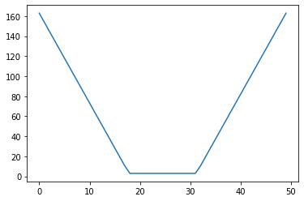
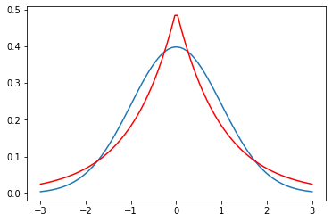
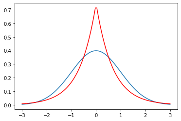

import numpy as np
Note we also compare Gaussian distribution and Laplace distirbution to empiracally find the \(95%\) region with respect to their scale.
We found out 95% Confidence interval is \(Gaussian ( 2 \sigma) == Laplace(3b)\)
Scoring Rules for Quantile and Interval Forecasts
Interval Score
- classical case of $(1 - ) % $ prediction interval
- with lower and upper endpoints (predictive quatiles) at level \(\alpha/2\) and $ 1 - /2$
- Interval score \[ S_\alpha^{int}(l, u ;x) = (u-l) + \frac{2}{\alpha}(l-x) \mathbb{1} \{x < l\} + \frac{2}{\alpha} (x - u)\mathbb{1}\{x > u\}\]
\(\alpha_1= 0.02,\alpha_2= 0.05,\alpha_3=0.1\) (implying nominal coverages of 98%,95%,90%)
def interval_score(x, lower, upper, alpha=0.05):
assert np.all(upper>=lower), "Upper should be greater or equal to lower. Please check are you giving the upper and lower in propoer order "
return (upper - lower) + (2/alpha)*(lower-x)*(x<lower) + (2/alpha)*(x-upper)*(x>upper)x = np.linspace(1.0, 12.0)
l = 5.0
u = 8.0
iscore = interval_score(x, l, u)import matplotlib.pyplot as pltplt.plot(iscore)
x = np.linspace(1.0, 12.0)
l = 5.0*np.ones_like(x)
u = 8.0*np.ones_like(x)
iscore = interval_score(x, l, u)
plt.plot(iscore)CRPS
import scipy.stats as stats
def crps_gaussian(y_pred, y_std, y_true, scaled=True):
"""
Return the negatively oriented continuous ranked probability score for
held out data (y_true) given predictive uncertainty with mean (y_pred)
and standard-deviation (y_std). Each test point is given equal weight
in the overall score over the test set.
Negatively oriented means a smaller value is more desirable.
"""
# Flatten
num_pts = y_true.shape[0]
y_pred = y_pred.reshape(
num_pts,
)
y_std = y_std.reshape(
num_pts,
)
y_true = y_true.reshape(
num_pts,
)
# Compute crps
y_standardized = (y_true - y_pred) / y_std
term_1 = 1 / np.sqrt(np.pi)
term_2 = 2 * stats.norm.pdf(y_standardized, loc=0, scale=1)
term_3 = y_standardized * (2 * stats.norm.cdf(y_standardized, loc=0, scale=1) - 1)
crps_list = -1 * y_std * (term_1 - term_2 - term_3)
crps = np.sum(crps_list)
# Potentially scale so that sum becomes mean
if scaled:
crps = crps / len(crps_list)
return crpsdata = np.random.normal(loc=1.0, scale=1.0, size=1000)
mus = np.ones_like(data)
sigmas = np.ones_like(data)
crps_gaussian(data, sigmas, mus, scaled=False)587.2681356774692PLot Gaussian and Laplace with same interval
For the laplace distribution
$f(med) = $ and therefore \(D(x_{0.5}) = \frac{\sigma^2}{2n}\) confidence interval of the median
\[ x - \frac{ u_{1 - \alpha/2} (n-1)0.707 s}{\sqrt{n}} \leq median \leq x + \frac{u_{1 - \alpha/2} (n-1)0.707 s}{\sqrt{n}}\]
Example :
laplace disitrbution L(0, 2) : variance \(s^2 = 2b^2 = 2.246\) Substitutint in above equation median = 0.0119 estimated b = 1.0596
mu = 0.0119
b = 1.0596
n = 50
var = 2*b**2; print ("Variance : ", var)
confidence_95 = (stats.norm.ppf(1 - 0.05/2) * 0.707 * var**0.5)
print (mu-confidence_95 , mu+confidence_95)Variance : 2.24550432
-2.0645642208852193 2.088364220885219stats.norm.ppf(1 - 0.05/2) * 0.707 * var3.111583069190677for i in np.linspace(0,0.99,num=10):
print (i,stats.norm.ppf(i), stats.laplace.ppf(i))0.0 -inf -inf
0.11 -1.2265281200366098 -1.5141277326297755
0.22 -0.7721932141886848 -0.8209805520698302
0.33 -0.4399131656732338 -0.4155154439616658
0.44 -0.15096921549677725 -0.12783337150988489
0.55 0.12566134685507416 0.1053605156578264
0.66 0.41246312944140495 0.3856624808119848
0.77 0.7388468491852137 0.7765287894989964
0.88 1.1749867920660904 1.4271163556401458
0.99 2.3263478740408408 3.912023005428145(0.29 * n**0.5)/(0.707* var**0.5 * 49)0.039501224521614836stats.norm.ppf(1 - 0.05/2)1.959963984540054import matplotlib.pyplot as plt
import numpy as np
import scipy.stats as stats
import math
mu = 0
variance = 1
sigma = math.sqrt(variance)
x = np.linspace(mu - 3*sigma, mu + 3*sigma, 100)
plt.plot(x, stats.norm.pdf(x, mu, sigma))
plt.plot(x, stats.laplace.pdf(x, mu,sigma), c='r')
plt.show()
Gaussian vs Laplace
95% Confidence interval is \(Gaussian ( 2 \sigma) == Laplace(3b)\)
r = stats.norm.rvs(mu, sigma, size=1000)
v = ((mu - 2*sigma) < r ) & (r< (mu + 2*sigma))
np.sum(v)/10000.953r = stats.laplace.rvs(mu, sigma, size=1000)
v = ((mu - 3*sigma) < r ) & (r< (mu + 3*sigma))
np.sum(v)/10000.952for mu in np.linspace(0, 255, num=10):
for sigma in np.linspace(0, 5, num=10):
r = stats.laplace.rvs(mu, sigma, size=1000)
v = ((mu - 3*sigma) < r ) & (r< (mu + 3*sigma))
print (np.sum(v)/1000)0.0
0.943
0.962
0.959
0.962
0.947
0.941
0.953
0.949
0.941
0.0
0.962
0.956
0.955
0.95
0.959
0.952
0.943
0.95
0.939
0.0
0.947
0.951
0.943
0.954
0.941
0.961
0.951
0.949
0.963
0.0
0.961
0.955
0.956
0.951
0.939
0.941
0.95
0.949
0.956
0.0
0.943
0.941
0.956
0.948
0.949
0.955
0.942
0.953
0.948
0.0
0.945
0.949
0.957
0.951
0.953
0.954
0.949
0.955
0.954
0.0
0.957
0.945
0.945
0.935
0.944
0.945
0.961
0.95
0.95
0.0
0.951
0.942
0.954
0.953
0.953
0.954
0.941
0.947
0.955
0.0
0.942
0.95
0.956
0.939
0.939
0.952
0.951
0.95
0.951
0.0
0.95
0.94
0.968
0.95
0.949
0.958
0.939
0.947
0.945stats.laplace.ppf(1 - 0.05/2)2.99573227355399x = np.array([True, False])
y = np.array([True , True])
x & yarray([ True, False])mu = 0
variance = 1
sigma = math.sqrt(variance)
b = math.sqrt(var/2)mu + 2*sigma2.0mu + 3*0.672.0100000000000002b = 0.67
laplace_variance = 2*b**2
print (laplace_variance)0.8978000000000002
mu = 0
variance = 1
sigma = math.sqrt(variance)
x = np.linspace(mu - 3*sigma, mu + 3*sigma, 100)
plt.plot(x, stats.norm.pdf(x, mu, sigma))
plt.plot(x, stats.laplace.pdf(x, mu,b), c='r')
plt.show()
stats.laplace.ppf(0.975)2.99573227355399stats.laplace.ppf(0.025)-2.995732273553991